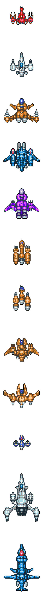

Canônicos
A Era da Ascensão do Império
- Star Wars Episódio I: A Ameaça Fantasma por Terry Brooks
- Star Wars Episódio II: O Ataque dos Clones por R. A. Salvatore
- Star Wars: Dark Disciple (2015), por Christie Golden
- Star Wars Episódio III: A Vingança dos Sith por Matthew Stover
- Star Wars: Lordes dos Sith | Lords of the Sith
- Star Wars: Tarkin (November 2014), by James Luceno
- Star Wars: Thrawn (April 2017), by Timothy Zahn
- Star Wars: Um Novo Amanhecer | Star Wars: A New Dawn (September 2014), by John Jackson Miller
A Era da Rebelião
- Star Wars Episode IV: A New Hope (1976), por Alan Dean Foster & George Lucas
- Star Wars: Heir to the Jedi (2015), por Kevin Hearne
- Star Wars: Battlefront: Twilight Company (2015), por Alexander Freed
- Star Wars Episode V: The Empire Strikes Back (1980), por Donald F. Glut
- Star Wars Episode VI: Return of the Jedi (1983), por James Kahn
- Star Wars: Marcas da Guerra | Star Wars: Aftermath (2015), por Chuck Wendig
- Star Wars: Dívida de Honra | Star Wars: Aftermath - Life Debt (maio de 2016), por Chuck Wendig
- Star Wars: Fim do Império | Star Wars: Aftermath - Empire's End (2017), por Chuck Wendig
A Série Journey to Star Wars: The Force Awakens
- Lost Stars (setembro de 2015), por Claudia Gray
- Moving Target: A Princess Leia Adventure (setembro de 2015), por Cecil Castellucci e Jason Fry
- Smuggler's Run: A Han Solo & Chewbacca Adventure (setembro de 2015), por Greg Rucka
- The Weapon of a Jedi: A Luke Skywalker Adventure (setembro de 2015), por Jason Fry
- Star Wars: Before the Awakening (dezembro de 2015), por Greg Rucka
Nova Republica
- Star Wars: New Republic: Bloodline (março de 2016), by Claudia Gray
Era de Primeira Ordem a Resistência
- Star Wars Episódio VI: O Retorno de Jedi
Star Wars: Legends
A Era da Velha República
- Star Wars Episódio IV: Uma Nova Esperança
Darth Bane
- Darth Bane: Path of Destruction (Darth Bane: O Caminho à Destruição) por Drew Karpyshyn
- Darth Bane: Rule of Two (Darth Bane: A Regra de Dois) por Drew Karpyshyn
- Darth Bane: Dynasty of Evil (Darth Bane: Caminho da Destruição) por Drew Karpyshyn
A Era da Ascensão do Império
- Star Wars Episódio IV: Uma Nova Esperança.
Legacy of the Jedi (O Legado do Jedi)
- Legacy of the Jedi (O Legado do Jedi) por Jude Watson
Série do Aprendiz do Jedi
- The Rising Force (A Força Nascente) por Dave Wolverton
- The Dark Rival (O Rival Sombrio) por Jude Watson
- The Hidden Past (O Passado Escondido) por Jude Watson
- The Mark of the Crown (A Marca da Coroa) por Jude Watson
- The Defenders of the Dead (Os Defensores dos Mortos) por Jude Watson
- The Uncertain Path (O Caminho Incerto) por Jude Watson
- The Captive Temple (O Templo Cativo) por Jude Watson
- The Day of Reckoning (O Dia de Julgamento) por Jude Watson
- The Fight for Truth (A Luta pela Verdade) por Jude Watson
- The Shattered Peace (A Paz Despedaçada) por Jude Watson
- The Deadly Hunter (O Caçador Fatal) por Jude Watson
- The Evil Experiment (A Experiência Maligna) por Jude Watson
- The Dangerous Rescue (O Resgate Perigoso) por Jude Watson
- The Ties That Bind (Os Laços que Unem) por Jude Watson
- The Death of Hope (A Morte da Esperança) por Jude Watson
- The Call to Vengeance (O Chamado à Vingança) por Jude Watson
- The Only Witness (A Única Testemunha) por Jude Watson
- The Threat Within (A Ameaça por Dentro) por Jude Watson
Os Segredos dos Jedi
- Secrets of the Jedi (Os Segredos dos Jedi) por Jude Watson
Cloak of Deception (O Manto de Engano)
- Cloak of Deception (O Manto de Engano) por James Luceno
Rogue Planet (O Planeta Selvagem)
- Rogue Planet (O Planeta Selvagem) por Greg Bear
Série de Aventura dos Jedi
- Path to Truth (O Caminho à Verdade) por Jude Watson
- The Way of the Apprentice (O Caminho do Aprendiz) por Jude Watson
- The Trail of the Jedi (O Rastro dos Jedi) por Jude Watson
- The Dangerous Games (Os Jogos Perigosos) por Jude Watson
- The Master of Disguise (O Mestre do Disfarce) por Jude Watson
- The School of Fear (A Escola de Medo) por Jude Watson
- The Shadow Trap (A Armadilha Sombria) por Jude Watson
- The Moment of Truth (O Momento da Verdade) por Jude Watson
- The Changing of the Guard (A Troca da Guarda) por Jude Watson
- The False Peace (A Falsa Paz) por Jude Watson
- The Final Showdown (O Duelo Final) por Jude Watson
A Guerra dos Clones
- Shatterpoint (Ponto de Ruptura) por Matthew Stover
- The Cestus Deception (A Decepção de Cestus) por Steven Barnes
- The Hive (A Colmeia) por Steven Barnes
- Jedi Trial (A Prova de Jedi) por David Sherman & Dan Cragg
- Yoda: Dark Rendezvous (Yoda: O Encontro Escuro) por Sean Stewart
A Vingança dos Sith
- Labyrinth of Evil (Labirinto do Mal) por James Luceno
- O Lorde das Trevas: A Ascensão de Darth Vader por James Luceno
Coruscant Nights (As Noites de Coruscant)
- Jedi Twilight (O Crepúsculo dos Jedi) por Michael Reaves (Data de Lançamento julho 2008)
Last of the Jedi (Os Últimos dos Jedi)
- Dark Warning (O Aviso Escuro) por Jude Watson
- The Desperate Mission (A Missão Desesperada) por Jude Watson
- Return of the Dark Side (O Retorno do Lado Escuro) por Jude Watson
Death Star (Estrela da Morte)
Death Star (Estrela da Morte) por Michael Reaves e Steve Perry
A Trilogia de Han Solo
- The Paradise Snare (A Armadilha do Paraíso) por A.C. Crispin
- The Hutt Gambit (A Estratégia Hutt) por A.C. Crispin
- Rebel Dawn (A Madrugada da Rebelião) por A.C.
As Aventuras de Han Solo
- Han Solo at Stars' End (Han Solo no Stars' End) por Brian Daley
- Han Solo's Revenge (A Vingança de Han Solo) por Brian Daley
- Han Solo and the Lost Legacy (Han Solo e o Legado Perdido) por Brian Daley
A Era da Rebelião
Uma Nova Esperança
Star Wars Galaxies (As Galáxias de Star Wars)
Splinter of the Mind's Eye (A Farpa do Olho da Mente)
O Império Contra-Ataca
- Star Wars Episódio V: O Império Contra-Ataca por Donald F. Glut
Shadows of the Empire (Sombras do Império)
- Shadows of the Empire (Sombras do Império) por Steve Perry
O Retorno de Jedi
- Star Wars Episódio VI: O Retorno de Jedi por James Kahn
A Era da Nova República
The Courtship of Princess Leia (O Cortejo da Princesa Leia)
- The Courtship of Princess Leia (O Cortejo da Princesa Leia) por Dave Wolverton
A Trilogia de Thrawn
- Heir to the Empire (O Herdeiro do Império) por Timothy Zahn
- Dark Force Rising (O Despertar da Força Negra) por Timothy Zahn
- The Last Command (A Última Ordem) por Timothy Zahn
Era da Primeira Ordem e A Resistência
- Star Wars Episódio IV: Uma Nova Esperança
The Perfect Weapon
- Star Wars: The Perfect Weapon (novembro de 2015), por Delilah S. Dawson
The Force Awakens (Episode VII)
- Star Wars: Before the Awakening (dezembro de 2015), por Greg Rucka
- Star Wars: The Force Awakens (dezembro de 2015), por Alan Dean Foster
- Star Wars: The Force Awakens (fevereiro de 2016), por Michael Kogge
A Era da Nova Ordem Jedi
Um Homem Prático
A Nova Ordem Jedi
The Dark Nest Trilogy
- The Joiner King (O Rei Unificador) por Troy Denning
- The Unseen Queen (A Rainha Invisível) por Troy Denning
- The Swarm War (A Guerra de Enxame) por Troy Denning
Era do Legado
Legado da Força
- Betrayal (Traição) por Aaron Allston
- Bloodlines (Linhas de Sangue) por Karen Traviss
- Tempest (Tempestade) por Troy Denning
- Exile (Exílio) por Aaron Allston
- Sacrifice (Sacrifício) por Karen Traviss
Fate of the Jedi
- Outcast por Aaron Allston
- Omen por Christie Golden
- Abyss por Troy Denning
- Backlash por Aaron Allston
- Allies por Christie Golden